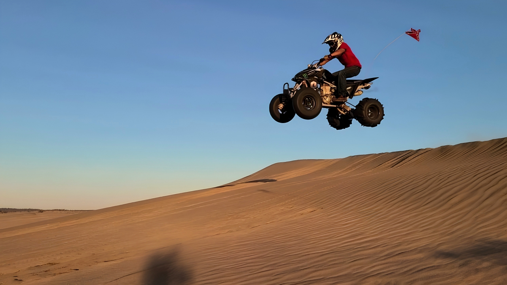
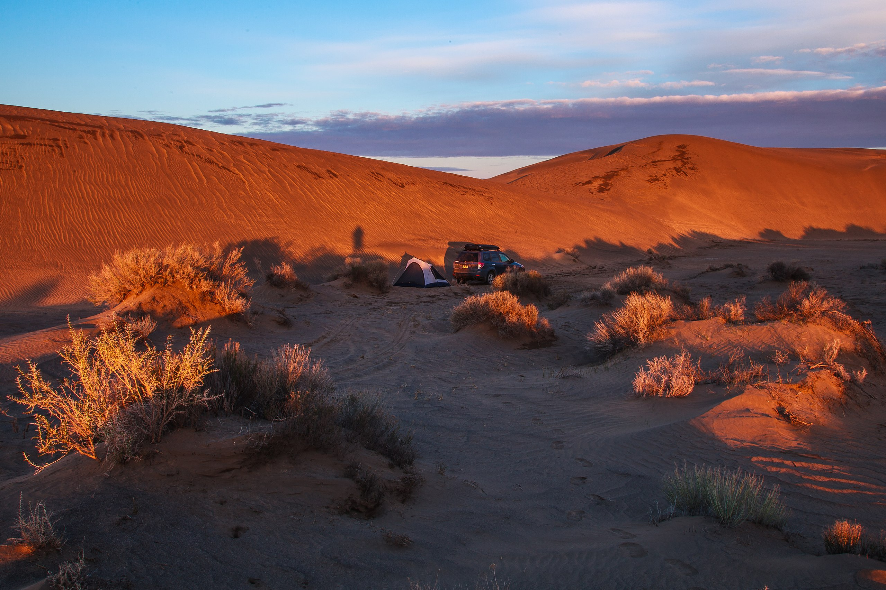
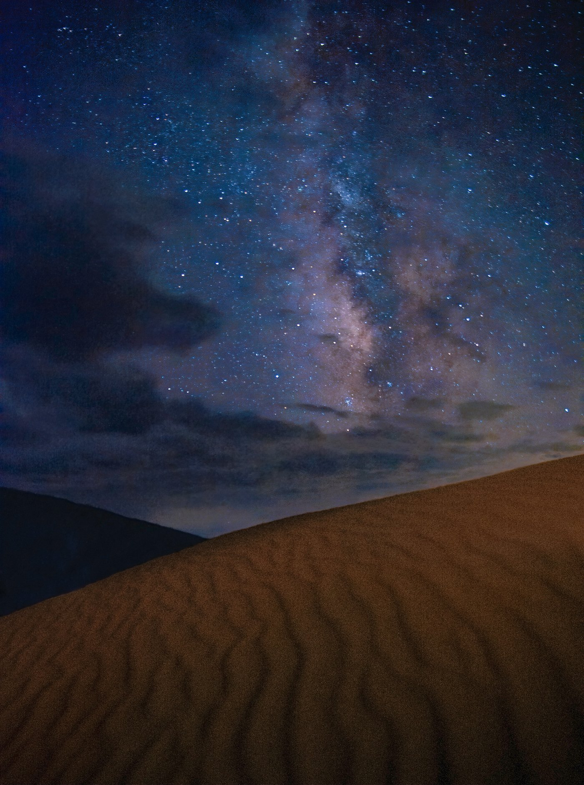
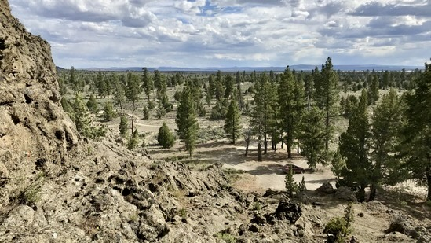
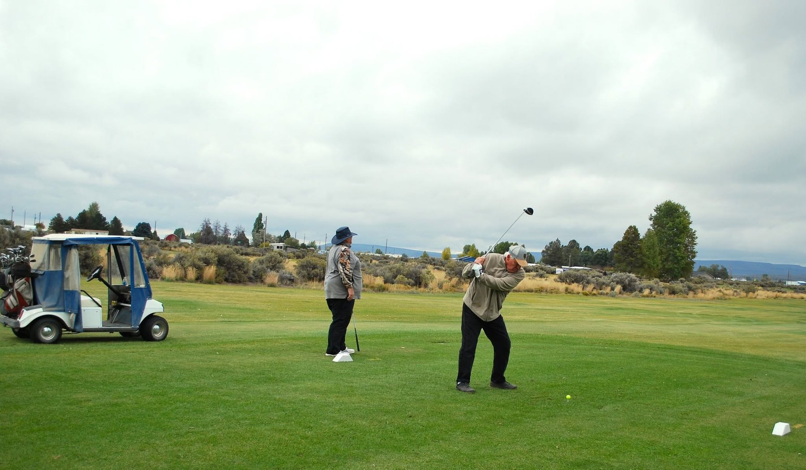
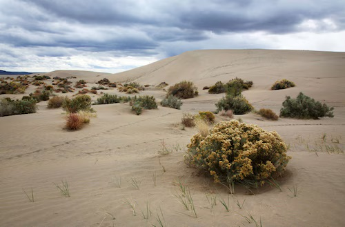

Things to see nearby.
Shifting sand dunes, some of the darkest skies in Oregon, a quiet lake and nine holes of golf. There is a weekend’s worth of high desert out here, and most of it is a short drive from town.
Two of these are ours. The rest belong to everyone.
The Park & Recreation District cares for the golf course and Baert Lake, and both are open to visitors the same as they are to residents. The dunes, the Lost Forest and Fossil Lake are public land managed by the Bureau of Land Management, and they sit only a few minutes outside town.
Before you head out to any of the BLM areas, it is worth checking current access and conditions. Roads out here change with the weather, and what was passable in June may not be in February.

Four places worth the drive.
Each one is a different kind of day. Pick by what you feel like doing and how far you want to travel.
Christmas Valley Sand Dunes
The largest inland shifting dunes in the Pacific Northwest, open for riding, hiking and sandboarding.

Dark-sky stargazing
Some of the darkest skies in Oregon, and no admission at the gate.

Lost Forest & Fossil Lake
A stand of ancient ponderosa pines where no forest should be, and a century-old fossil site beside it.

Christmas Valley Golf Course
A public nine with loaner clubs and no tee times. Turn up and play.

Eight thousand acres of moving sand.
The Christmas Valley Sand Dunes are the largest inland shifting dunes in the Pacific Northwest, and they are open for off-highway vehicle riding, hiking and sandboarding. People come from across the state for them, and on a holiday weekend you will have company.
The dunes are on public land managed by the BLM, so the District does not set the rules out there. Check current access, closures and conditions before you load up.
Stay after dark.
There is very little light out here to compete with the sky, and the difference is not subtle. On a clear moonless night the Milky Way is plainly visible, and people who have only ever seen a city sky tend to be quiet for a while.
You do not need anything for this. Bring a blanket, let your eyes adjust for twenty minutes, and look up.
A forest that should not be there.
The Lost Forest is a stand of ancient ponderosa pines growing in open desert, forty miles from the nearest trees of their kind and on a fraction of the rainfall they are supposed to need. Fossil Lake sits nearby, a dry bed that has been giving up Ice Age remains for more than a century.
Both are remarkable and both are fragile. They are BLM land, the roads are rough, and conditions are worth checking before you go.
The lake and the course are open to you too.
Baert Lake is free and open to the public through the warm months for fishing, non-motorized boating and swimming, and it becomes a skating rink in a cold winter once the ice has been measured safe. The golf course is a public nine with loaner clubs, and no tee time is required.


Not sure where to start?
We are at 57334 Christmas Tree Lane, Tuesday through Friday, 10 to 2, and we are happy to point you somewhere good.